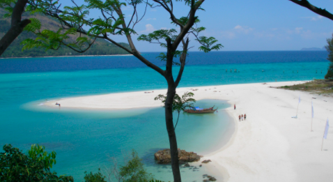

The Maldives are located in the north central Indian Ocean. The Maldives consists of a chain of Islands. To citizens of the U.S., the Maldives is very appealing because for a vacation estination it is quite inexpensive. The cost for a private room in a house is about $30 and a typical person will spend $10 on food, and $10 on activities.
Ko Lipe, which is our second most tropical destination is located in the southern Thailand's Saturn Province. This is the perfect desitantion for scuba diving and snorkelling due to the fact the coral reefs are easy to reach from all four of the island's beaches.
The last destination we will look at is, Bali. Bali is an island of Indonesia and is oly 8 degrees from the equator. Besides their unique culture, Bali is famous for its volcanos, beaches and their coral reefs. Bali is the most expensive tourist destination in Indonesia, however the food and rooms are still inexpensive.
| Maldives | Loacted in the Indian Ocean |
| Ko Lipe | Located in southern Thailand's Saturn Province |
| Bali | An Island of Indonesia |
Click here to view more information about the top three tropical destinations for your next trip!